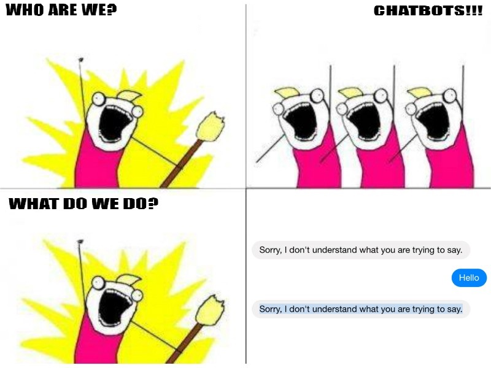

Per Forrester report 2017, about 57% of companies are already using chatbots. With the huge interest and buzz around chatbots, more and more companies are developing chatbots. Poncho is a Messenger bot which is your weather expert. It sends alerts up to twice a day with user consent and is intelligent enough to answer questions like “Should I take an umbrella today?”
There are various chatbots like the above, which are reducing human efforts and simplifying tasks. But there is a concerning trend, that the success rate of bot is low. Facebook stated that as much as 70% of messenger chatbots failed and some early adopters have dropped their chatbots due to disappointing performance.

The logical approach to assure the quality of the chatbot is to do thorough testing. Why most chatbots fail to provide quality despite testing is that the developers tend to test them themselves. Developers should do some functional and unit testing, it is required. But that might not be enough to gauge if the bot is providing functionality accurately and swiftly.
There are a variety of reasons, why developers should not be testing their own bot. I have covered most of them in this article. They are:
Vocabulary
Developers having created the bot tend to be confined to the training examples. They do not have the knowledge for generating the most probable sentences a user will say. An example for this can be: for a flight reservation cancellation, a user might say “Remove my reservation” instead of “Cancel my reservation”. The bot should have a high enough vocabulary to understand most scenarios.
Coverage of types of users
It is important to understand the different type of users. Since not all users talking to a niche market like a finance bot would be familiar with the knowledge required for chatting effectively with the bot. Beginner users might not have the grammar or vocabulary to make use of the bot. Contrary, there could be users with great vocabulary who expect the bot to understand them too.
Identifying the persona of the different users using your bot is necessary to ensure your bot caters to most of the personas, it is best to test it from people who fit these personas.
Dialect
It is important to consider the way your users speak. Language can have various dialects depending on region the user belongs to. Therefore, understanding your users is important. A detailed understanding of how a user speaks is crucial for a chatbot. Words meaning differs by region and language also changes. Consider example of a chatbot made for an electricity provider in USA, as many as 24 different dialects of English exists in America. To make your bot understandable to a huge audience, you need to know if the dialects influence your bot’s performance, which again is not possible for developers.
Conversational flow design
Conversational flow should be usable and minimalistic. You will not know if the design is a natural flow or if it is confusing for your end users. NLP or programming purpose you might split a certain user response into multiple responses. The replies for these sentences would require user to enter information in different sentences which could have been easily clubbed. If you have a restaurant booking chatbot, consider the sentence “I want to book a table for 4 at 8 tonight”. For this sentence, the NLP might fail as it is difficult to distinguish the number of guests to the time. The general approach would be to ask the users, the number of guests and time. In this approach, the user needs to enter more sentences than their natural flow.